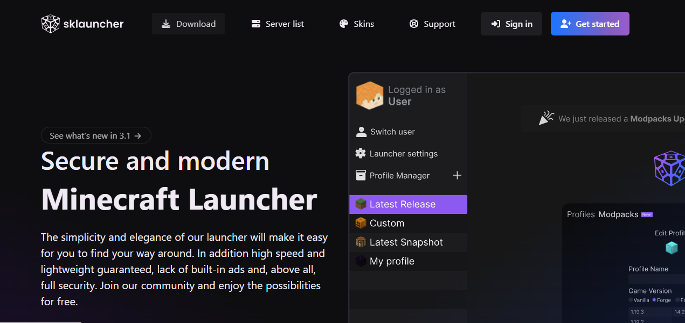
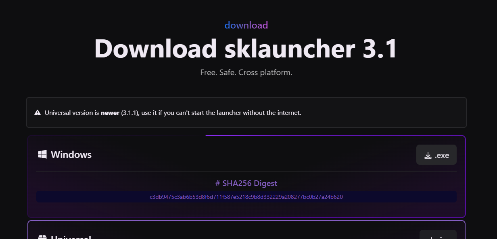
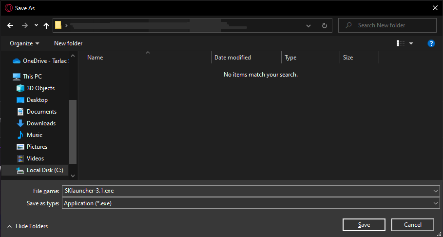
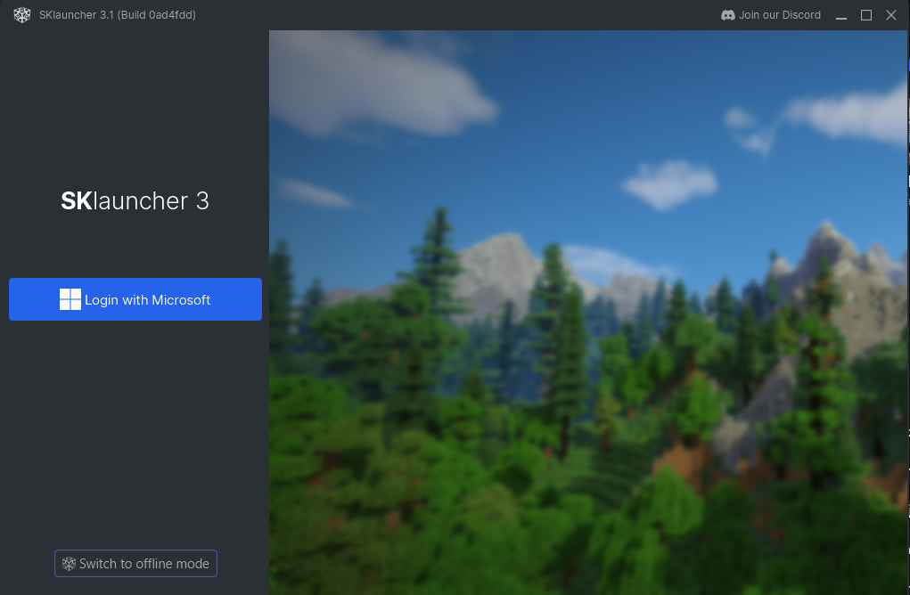
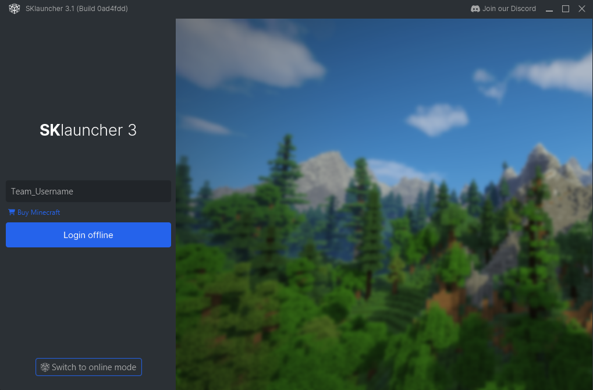
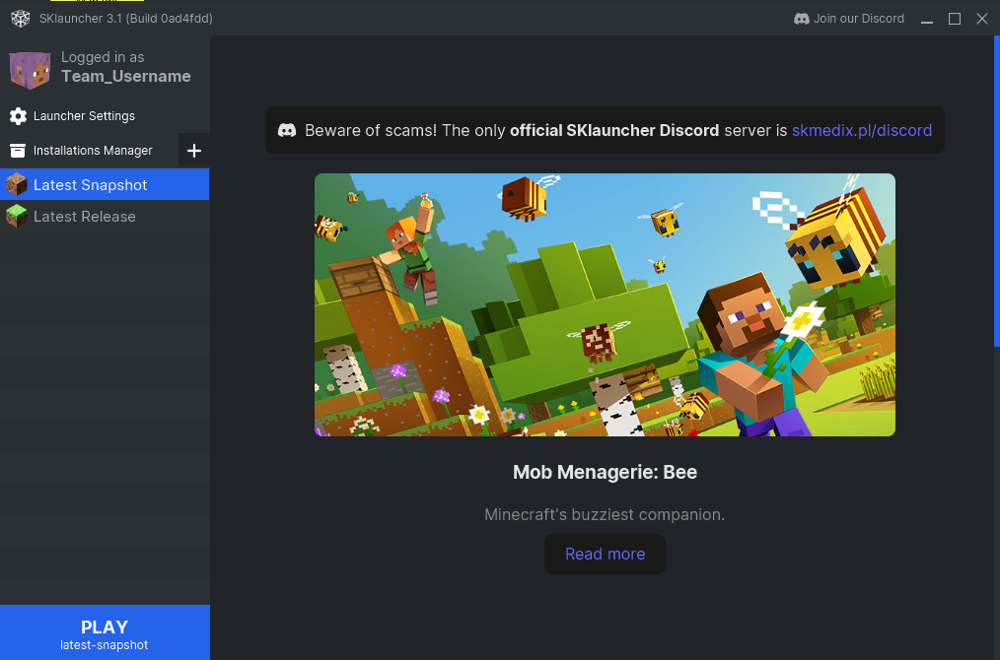
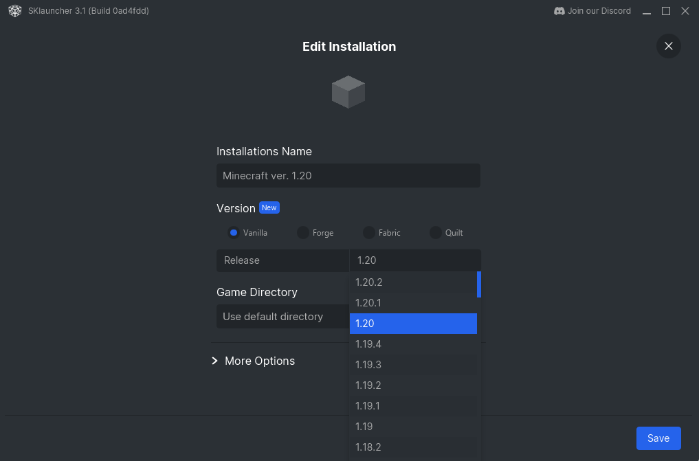
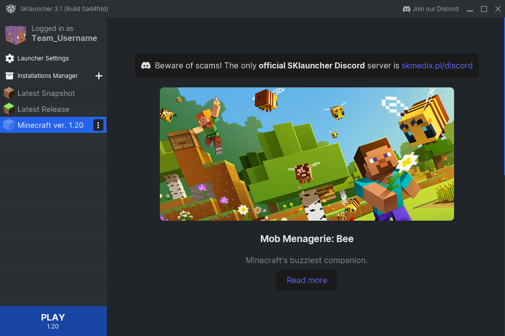
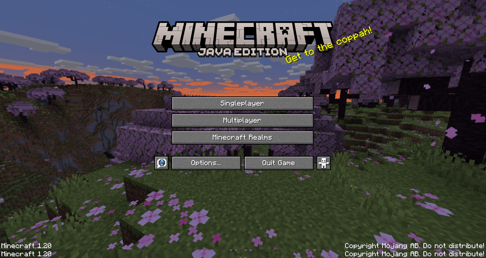

How to Install Minecraft Launcher?
Step 1: Download SKLauncher from the Official Website
Visit SKLauncher's official website. On the website, you will find the download link. Click this link to start downloading SKLauncher.
Step 2: Download the Windows "exe" File
Once you are on the download page, look for the Windows "exe” version of SKLauncher. Click the download button to start downloading the executable file to your computer.
Step 3: Save to Your Desired Location
When the download begins, your web browser will ask you to choose a location to save the file. Choose a location on your computer where you want to store the SKLauncher executable. Typically, users save these files to their Downloads folder.
Step 4: Launch the Application and Select Offline Mode
Navigate to the location where you saved the SKLauncher executable. Double-click the file to launch the application. When opened, you will be presented with options. Select "Offline mode" to use the launcher.
Step 5: Set Your Username to TeamName_Username and Log in Offline
In the launcher interface, you will see a field to set your username. Make sure your username follows the format "TeamName_Username" . After setting the username, log in offline.
NOTE: You will use the username you've entered in the registration forms.
Step 6: Click the "+" Icon Next to Installation Manager
In the launcher, find the "Settings Man ager” section. There should be a "+" symbol next to it. Click this icon to add a new version of Minecraft.
Step 7: Name it and Choose Release Version 1.20
When you add a new version of Minecraft, name it “Minecraft Version 1.20”. Then, from the available options, select version 1.20. Remember to save your selection to confirm which version you want to play.
Step 8: Select the Downloaded Version and Click Play
Return to the main launch screen. You will now see the option "Minecraft Version 1.20". Select this version, then click the "Play" button. This action will launch the Minecraft game with the selected version.
Step 9: You're Almost done! Click "Multiplayer" and Add Server
When you are in the game, click the "Multiplayer" button.
Step 10: Add Server
When you are in the Edit Server Info, name the server "JPCSXArchCestry: Heritage Site" and input the IP Address "jpcs.aternos.me:37889" . Then, click "Done" to save the server.

Step 11: Join Server
Click the server you just added and click "Join Server" to start playing!
Congratulations!
Congratulations, you are now ready to dive into the world of Minecraft with version 1.20. Start building, exploring, and don't forget that you have a chance to earn P1,500 while enjoying your creative endeavors. Good luck!